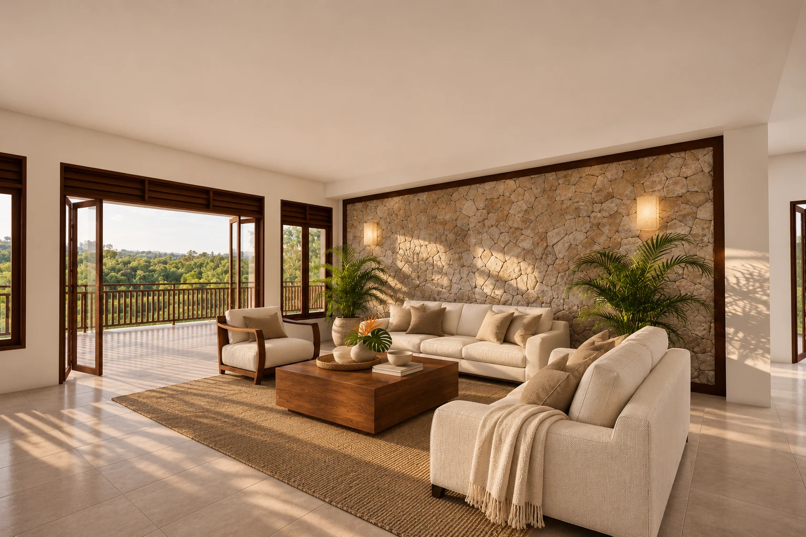

Interior design / Architectural visualization
Rhynie
Drive.
A residential interior study for Chantier Construction, shaped around natural materials and an open connection to the landscape.
Material honesty.
Quiet character.
The living room and kitchen share a restrained palette of warm ivory, walnut and dark timber. The stone feature wall anchors the living area; tailored cabinetry and subtle material detail define the kitchen.
02 / Living room
A room to
settle into.
Warm light on natural stone, generous neutral seating and a walnut centrepiece. The terrace remains visually connected to the interior.
03 / Living room details
Up close.
Details drawn directly from the approved visualizations.
04 / Kitchen
Tailored for
everyday life.
Warm cream Shaker cabinetry, preserved glazed display sections and a dark walnut island. The kitchen maintains its own material identity.
05 / Kitchen details
Considered
joinery.
A consistent finish family, resolved at the scale of each cabinet, window and worktop.
Cream and greige polygon masonry with restrained dark joints.
Furniture and island millwork with visible natural grain.
Soft upholstery, painted Shaker fronts and light counters.
Subtle satin brass details, dark timber window frames.
Chantier Construction / Rhynie Drive
Interior direction.
Architectural visualization and material concept presentation by Crio Creatives. Design imagery communicates the proposed visual direction.